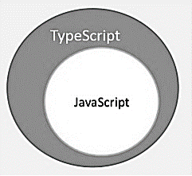
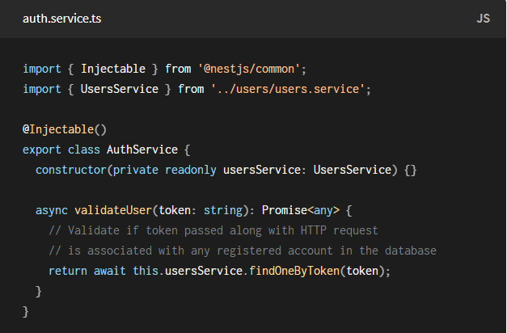
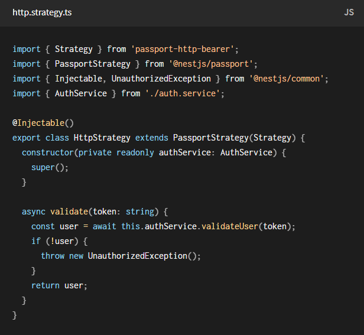

TypeScript
- What is TypeScript?
- Features of TypeScript
- TypeScript and ECMAScript
- Why use TypeScript?
What is TypeScript?
TypeScript is JavaScript for application-scale development
Features of TypeScript
- JavaScript is TypeScript
- TypeScript supports JS libraries
- TypeScript is portable
TypeScript and ECMAScript

Why use TypeScript?
- Compilation
- Strong Static Typing
- Object Oriented Programming
Transpilers
- Source-To-Source Compilers
- Benefit of using Transpilers
- Babel
- Nest is a framework for building efficient, scalable Node.js server-side applications
- It uses progressive JavaScript, is built with TypeScript
- Combines elements of OOP (Object Oriented Programming), FP (Functional Programming), and FRP (Functional Reactive Programming)
- Under the hood, Nest makes use of Express, but also provides compatibility with a wide range of other libraries
Controller
Controllers are responsible for handling incoming requests and returning responses to the client.

Providers
Basically, almost everything may be considered as a provider – service, repository, factory, helper...

Modules
Modules provides metadata that Nest makes use of to organize the application structure.

Setting up Nest Project
- Install Node.js(>=8.9.0)
- Install Nest CLI with command "npm i -g @nestjs/cli"
- Create new project using command "nest new project"
Nest-generated structure
- app.controller.ts
- app.controller.spec.ts
- app.service.ts
- app.module.ts
- main.ts
app.controller.ts

app.controller.spec.ts

app.service.ts

app.module.ts

main.ts

Database model for MongoDB

Authentication
Authentication
Authentication